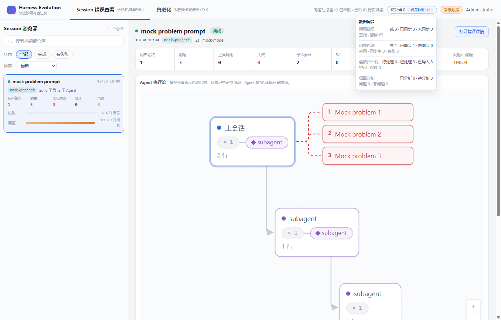

- Commit
- working tree
- Root session
- 11111111-1111-4111-8111-111111111111
- Mock service
- 127.0.0.1:52757
- API / Web
- 52760 / 52791
SMOKE REPORT
m6-16 bad_cases catalog sync smoke
Started the real API and Web against one deterministic mock that serves the paginated catalog plus both session-query endpoints, then verified the scheduled catalog task wrote three bad_cases, the root trace backfill made the session queryable, and the four-section sync popover reported the new counters.
3catalog rows synced
0upstream remaining
3attribution pending
1max concurrent API 2 calls
Environment and Artifact
2026-10-30 · Windows · SQLite + real Vite + headless ChromeScenario Matrix
4 pass| # | Scenario | Result | Detail | Evidence |
|---|---|---|---|---|
| 01 | Scheduled catalog sync pages and upserts bad_cases | PASS | Mock catalog served 1 page; synced=3, unsynced=0, lastBadCaseId=3. | — |
| 02 | Root trace backfill uses query API 1 + API 2 serially | PASS | Mock served 1 catalog calls, 3 trajectory calls; max concurrency 1. | — |
| 03 | Replay makes the session and its three problems queryable | PASS | GET /api/sessions contains 11111111-1111-4111-8111-111111111111; /bad-cases returns 3 items. | — |
| 04 | Four-section sync popover shows catalog and attribution counts | PASS | Popover text verified: 问题数量总 3 · 已同步 3 · 未同步 0空闲 · 游标 #3; 归因分析已分析 0 · 待分析 3问题 0 · 非问题 0. | screenshots/01-session-list-sync-popover.png |
Issues and Observations
No defects foundNo defects were found.
Evidence
1 screenshots
Automated Coverage Assessment
3 areas reviewed| Area | Coverage | Conclusion | Recommendation |
|---|---|---|---|
| Catalog pagination and upsert | UT + E2E + smoke | Three mock rows were upserted through the real scheduler; cursor reached 3. | Keep the mock contract test in CI; never call the real upstream. |
| Root trace chain after catalog sync | UT + E2E + smoke | Session 11111111-1111-4111-8111-111111111111 became queryable with three problems. | First production run re-pulls existing roots once by design. |
| Four-section popover | UT + smoke | Catalog and attribution counters render in the confirmed order. | Keep the 0/0 empty state covered by the component test. |
Conclusion
Ready for PR reviewThe mock-backed catalog-to-trace chain works; the only unverified dependency is the real upstream service contract.
- Real upstream paths/tokens remain to be supplied by the service owner.
- Attribution progress is aggregated read-only; the smoke data intentionally has no analysis rows.
m6-16 · bad_cases 目录数据定时同步 · mock catalog + session-query service, no production credentials